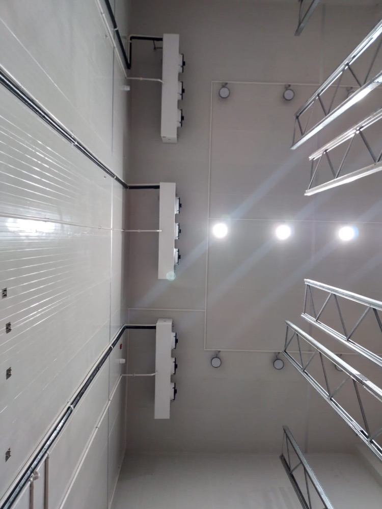
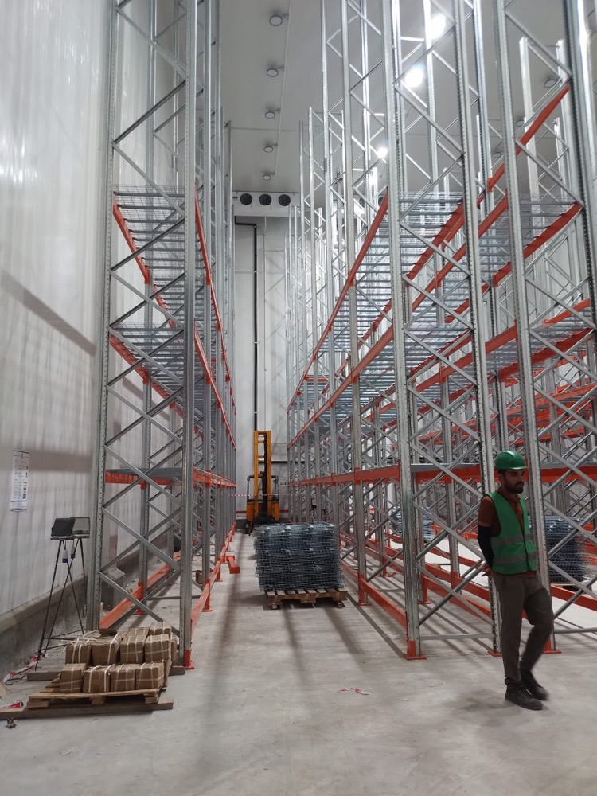
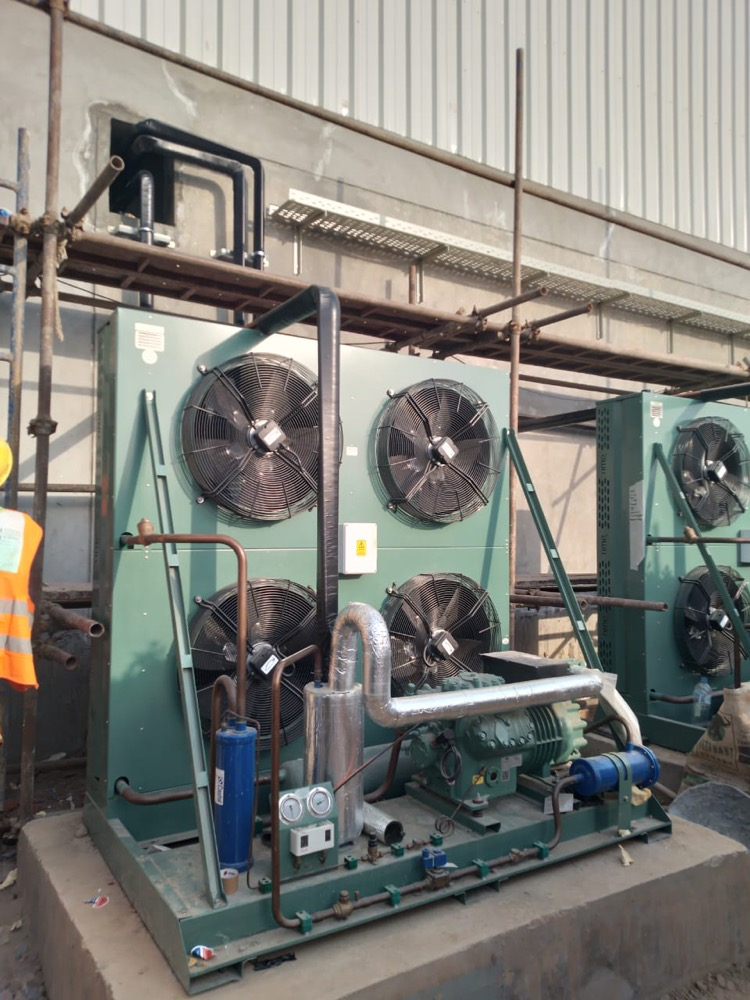
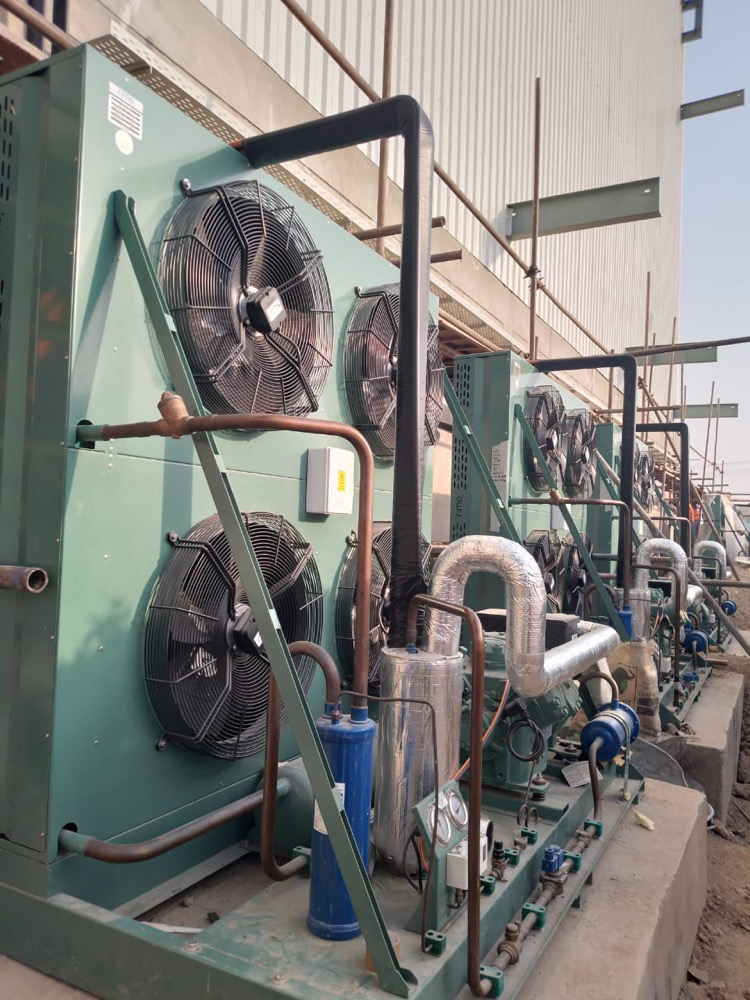

Coca-Cola TCCEC, Lahore — beverage cold storage with high-bay drive-in racking and a FireSafe PIR envelope
Izhar Foster designed and installed cold storage for The Coca-Cola Export Corporation (TCCEC) at the Lahore bottling and distribution operation — a high-bay warehouse for finished-goods staging, built with our own FireSafe PIR sandwich panels, drive-in pallet racking, ceiling-mounted ammonia evaporators, and Bitzer-based refrigeration plant. One of the most demanding cold-chain installations in Pakistan's beverage industry, delivered turnkey from a single 277,460 sqft Lahore manufacturing complex.

Beverage cold storage is one of the most exacting cold-chain disciplines in Pakistan. The product is high-volume and high-rotation. The pallet count runs into thousands per month. The brand standard is uncompromising. And the building envelope has to hold a stable temperature through 50°C Lahore summers and load-shed-prone grid conditions, without compromising the air quality, hygiene, or visual brand environment that a global beverage major requires.
The cold storage Izhar Foster delivered for The Coca-Cola Export Corporation (TCCEC) at the Lahore bottling operation answers all of that. It is a high-bay finished-goods warehouse with drive-in pallet racking, a FireSafe PIR insulated envelope, and an ammonia-based refrigeration plant integrated into the bottling-plant utilities. Most of the engineering is invisible by design — that is the point of cold storage that works.
What's actually inside the building
The interior photography from the commissioned facility tells the story:
- Drive-in pallet racking — vertical multi-tier rows accessed by a forklift driving into each lane. This racking topology suits the beverage SKU profile: a few hundred deep-stocked SKUs rotating last-in-first-out, with very high pallet density. The painted concrete floor supports the dynamic rolling load of the trucks at full pallet weight.
- Ammonia ceiling evaporators hang above the rack, distributing chilled air uniformly across the warehouse via long-throw fans. Ammonia is the right refrigerant choice at this scale — its thermodynamic efficiency at industrial loads, its zero ozone-depletion potential and zero global-warming potential, and the lower lifetime cost compared to HFC equivalents make it the global standard for plants of this magnitude.
- FireSafe PIR-clad ceiling and walls — Izhar Foster's own polyisocyanurate sandwich panels, manufactured at the 277,460 sqft Multan Road plant in Lahore. The panels deliver λ ≈ 0.022 W/m·K and fire class B1 to ASTM E84. The interior face is the brand-clean white that Coca-Cola plant standards require.
- Multi-stage gasket sealed insulated doors at the loading interface — heated frames where they cross the dewpoint line, and high-cycle hardware sized for the dock activity of a working beverage warehouse.
Why this site is hard
Lahore in July sees outdoor design temperatures over 45°C and operating peaks closer to 50°C. The condenser side of any refrigeration system loses approximately 2% of its capacity per degree-K rise above the design point on a medium-temperature application. A plant that ignores this Pakistan-specific reality will be undersized half the year.
Every Izhar Foster refrigeration plant is sized against ASHRAE 0.4% design dry-bulb temperatures for the specific Pakistani city, with a Pakistan-specific climate uplift baked into the calculator. For Lahore that means designing the condenser for around 47°C ambient on the Coca-Cola plant's bottle-warehouse side, not the 35°C number a North American or European cold-store guideline would suggest. The result is a plant that holds setpoint through the worst of Lahore's summer without staging emergency chilling.
Power is the second variable. Pakistan's grid is improving, but every industrial cold store needs a designed-in generator pathway: soft-start motors, sequenced restart logic, voltage stabilisation upstream of compressors, and UPS-backed controls and alarms. The TCCEC cold storage was specified with all of this from day one, not retrofitted after the first outage.
Where Izhar Foster fits in the global beverage cold-chain stack
TCCEC is a flagship inside Pakistan's beverage industry — and Coca-Cola's cold-storage scoping is among the most rigorous in any FMCG sector. Selecting an in-country vendor for a project of this profile demands the vendor offer:
- In-house panel manufacturing — not panels resold by a trading house. Izhar Foster's Lahore plant is the largest PIR sandwich panel facility in Pakistan, and the only one that has discontinued PU production in favour of pentane-blown PIR (zero ozone-depletion potential, no HCFC-141b).
- Engineering staff resident in country — over 100 engineers and 1,300 skilled workers, with calculation methodology cross-validated against ASHRAE Refrigeration Handbook Ch. 24, Heatcraft NROES, Copeland AE-103, and Bitzer Software.
- Named global component partners — Bitzer compressors (Germany), Heatcraft rack systems (USA), LU-VE evaporators (Italy), Hörmann high-speed insulated doors. None of these brands are exclusive to Izhar, but our integration depth with each is the distinguishing factor.
- ISO 9001:2015 (SGS-certified) quality management, plus Pakistan Engineering Council registration, AISC, AWS, MBMA, AISI memberships at the parent group level.
- 2,100+ delivered installations, of which TCCEC sits among the most prominent — alongside Pepsi-franchise Naubahar Bottling, Nestlé, Engro, K&N's, Hyperstar, Pakistan Army, and the USAID banana ripening program in Sindh.
Service depth — beverage cold-chain specifics
Beverage cold storage is more than refrigeration. It is the integration of:
SKU and pallet planning — the racking layout and aisle widths must match the forklift fleet. Drive-in racking is dense but inflexible; selective racking is flexible but lower-density. Most beverage operations need a hybrid topology, with high-rotation flagship SKUs in drive-in and long-tail in selective. Izhar Foster works with the operator's logistics team on bay-by-bay layout before the building goes up.
Hygiene zoning — even on the cold-storage side, beverage finished goods need a hygienically separated environment from raw inputs and packaging materials. PIR panels are non-hygroscopic, easy-clean, and hold up to high-pressure washdown. The wall-floor coves are sealed continuously to eliminate harbourage.
Visual brand environment — Coca-Cola plant standards specify wall colour, lighting colour temperature, and floor coatings. PIR panels are pre-painted at the steel-coil stage; we coordinate the panel finish with the brand standard so the cold store reads as a Coca-Cola environment from the moment the door opens.
Energy cost over 25 years — every kilowatt the cold store draws becomes electricity bills that run 8,760 hours a year. PIR's λ ≈ 0.022 W/m·K versus EPS's 0.034 cuts heat ingress by roughly a third over a 100 mm panel; combined with proper door discipline, leak-free joints, and right-sized refrigeration, the lifetime electricity savings on a beverage cold store of this scale are measured in tens of millions of rupees.
Photographs from the commissioned facility





Specification context — beverage cold storage in Pakistan
Izhar Foster has not published the project capacity, refrigerant charge, or pallet count for the TCCEC installation; client confidentiality on a Coca-Cola plant of this scale is standard. What we can describe is the engineering envelope a beverage cold storage of this profile typically operates within — and what we deliver against.
| Parameter | Beverage cold-store typical range |
|---|---|
| Operating temperature | +2 °C to +12 °C, depending on product line |
| Ambient design DB (Lahore) | 47 °C (ASHRAE 0.4% with Pakistan +2 K uplift) |
| Panel thickness | 100 mm or 125 mm — U-value 0.19 or 0.16 W/m²K |
| Refrigerant | Ammonia (NH₃) at this scale; HFC for satellite chiller rooms |
| Compressors | Bitzer screw or piston, often N+1 redundant |
| Evaporator type | Ceiling-mounted long-throw, defrost on demand |
| Racking | Drive-in for high-density SKUs; selective for long-tail |
| Door type | Sliding insulated, multi-stage gasket, heated frame |
| Floor | Sealed industrial concrete, sometimes with integral heating loops to prevent frost-heave on long-term low-temperature operation |
| Power redundancy | Generator-backed, UPS on controls, soft-start on compressor staging |
How this fits the Izhar Foster portfolio
TCCEC is one of two flagship Pakistani beverage cold-chain installations Izhar Foster has delivered — alongside Naubahar Bottling Company in Gujranwala, the Pepsi franchise. Two of the world's most demanding beverage majors, both relying on Pakistan-manufactured FireSafe PIR sandwich panels and Pakistan-installed refrigeration plants. Combined with Nestlé dairy cold storage, K&N's poultry blast freezers, and the USAID-funded banana ripening rooms in Sindh, this is the cold-chain backbone of Pakistan's modern food-and-beverage industry — and Izhar Foster has built a meaningful share of it.
If you are scoping a beverage cold storage project — whether for finished-goods staging, bulk concentrate refrigeration, or a regional distribution centre — start with our cold room heat load calculator to size the refrigeration, then request a quote with your room dimensions, capacity, and city. Engineers reply within 24 hours.
Other beverage and cold-chain projects in Pakistan.
How TCCEC sits within Izhar Foster's portfolio of named cold-chain installations across Pakistan.
Naubahar Bottling Co.
PIR-clad bottling-plant cold storage and on-site quality-control laboratory environment for the Pepsi franchise in Gujranwala.
023PL · KarachiConnect Logistics
Multi-bay cold-chain logistics warehouse with multiple loading docks and PIR roof-and-wall envelope, for third-party logistics in Karachi.
03Lab · LahoreHaier Climate Test Lab
Climate-controlled environmental testing chambers built inside Haier's Lahore facility — a cold-storage discipline applied to electronics QC.
04Agriculture · SindhUSAID Banana Ripening
Donor-funded banana ripening and cold storage rooms for farmer cooperatives in Sindh — supporting Pakistan's banana sector through post-harvest infrastructure.
How much would your version cost?
See the cost breakdown for a Coca-Cola-style beverage cold storage with drive-in racking and ammonia refrigeration. Rough estimate only — exact cost will differ. ±20% indicative band, includes editable Izhar margin. Engineer validation required before quoting a customer.
Open the rough estimator →